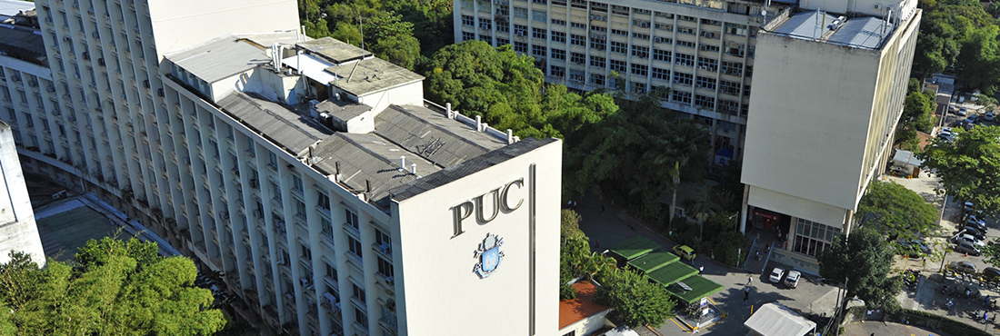

<<<<<<< HEAD

PUC-Rio
spiff
Meu currículo
- Colégio Santo Agostinho (2011-2015)
- Colégio PH(2016-2017)
- Colégio Santo Agostinho(2017-2022)
- PUC-RIO - Jornalismo(2023.1)
- UFRJ - Administração(2023.2-2024.1)
- PUC-RIO - Engenharia de Produção(2024.2-)
Minhas Matérias no Curso de Engenharia (PUC-RIO)
| Código da disciplina |
Nome da disciplina |
Ano e semestre |
Nome do professor |
| ENG4002 |
Programação e Modelagem |
2025.1 |
Cláudia |
| ENG4015 |
Materiais |
2025.1 |
Ana Rosa |
| ENG4020 |
Projeto - Materiais |
2025.1 |
Ana Rosa |
| FIS4001 |
Física 1 |
2025.1 |
Ana Maria |
=======
ER4
>>>>>>> f207bc5298590aa35bbc8d0759bd0e3ed1f4461f